RĂNG ĐEN Môi Đỏ BLACK TEETH Crimson
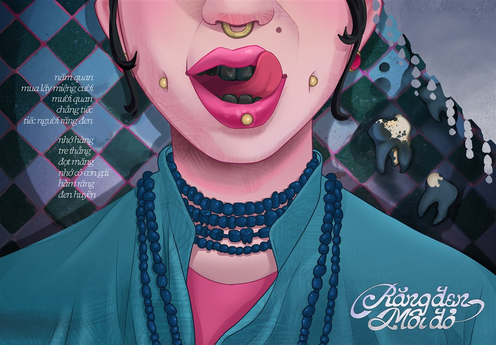
“Năm quan mua lấy miệng cười — Mười quan chẳng tiếc, tiếc người răng đen” “Five coins to buy a smiling mouth — Ten coins spared without regret for blackened teeth”
Chưa có son lì hay kẻ mày, các cụ ngày xưa “slay” bằng gì? Before matte lipstick, how did our ancestors slay?
“Năm quan mua lấy miệng cười,
Mười quan chẳng tiếc, tiếc người răng đen.”“Nhớ hàng tre thẳng đọt măng,— Ca dao Việt Nam
Nhớ cô con gái hàm răng đen huyền.”“Five coins to buy a smiling mouth,
Ten coins spared without regret for blackened teeth.”“Remembering straight bamboo rows and tender shoots,— Traditional Vietnamese Folk Verse
Remembering the girl with teeth of deepest jet-black.”
Thời chưa có son kem lì hay filter bóp mặt, “bộ nhận diện” đỉnh nhất của các bà, các mẹ chính là: tóc vấn gọn, môi đỏ trầu cay và một hàm răng đen bóng như gương. Đừng tưởng tự nhiên mà có — ngày xưa, răng càng đen nhánh như hạt na thì độ “chanh sả”, đoan trang và sức hút càng tăng gấp bội!
Long before matte lip tints or beauty filters, the ultimate “it-girl” starter pack for Vietnamese women was neatly coiled hair, betel-red lips, and mirror-glossy black teeth. The darker and shinier the teeth—like custard-apple seeds—the higher the elegance and charm.
Trong mắt người xưa, hàm răng đen không đơn thuần là chuyện làm dáng bên ngoài, mà còn là thước đo của sự nết na, kín đáo và tấm lòng thủy chung son sắt. Người ta tin rằng chỉ những ai đủ kiên nhẫn, chịu thương chịu khó vượt qua cả tháng trời kiêng khem nhuộm răng thì mới biết trân quý nếp nhà. Nhìn một nụ cười răng đen huyền bên cơi trầu cay và tiếng dao têm trầu “tách tách” đầu ngõ là thấy cả cái tình đằm thắm, dịu dàng của hồn quê Việt.
In our ancestors’ eyes, blackened teeth were far more than cosmetic flair—they were the measure of modesty, patience, and unwavering marital devotion. People believed that only someone patient enough to endure a month of rigorous dyeing truly cherished family traditions. A jet-black smile beside a spicy betel tray and the crisp “click-click” of the paring knife embodied the warm, soulful grace of the Vietnamese countryside.
“Người Đàng Ngoài không tin rằng con người ta có hàm răng đẹp cho đến khi hàm răng được nhuộm đen như hạt huyền.” “The people of Tonkin do not believe anyone has beautiful teeth until they are dyed as black as jet.” — Daniel Tavernier (1639–1645)
Không chỉ phái nữ, đến năm 1938 vẫn có tới 80% người dân Bắc Bộ (cả nam lẫn nữ) nhuộm răng đen như một nghi thức trưởng thành từ tuổi 13–15 (theo học giả Pháp Pierre Huard).
Not just women—as late as 1938, up to 80% of Northern Vietnamese locals (men and women alike) dyed their teeth black as a coming-of-age rite at 13–15 (French scholar Pierre Huard).
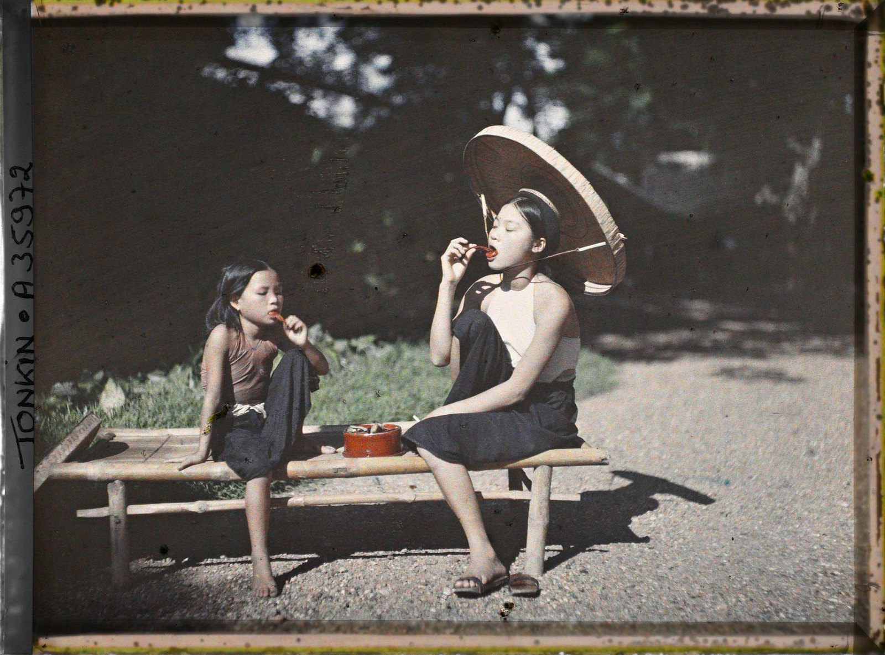
Tonkin A35972: Hai cô gái Bắc Bộ ngồi chõng tre ngậm thuốc nhuộm răng. Tonkin A35972: Northern Vietnamese women on a bamboo bench applying tooth dye.
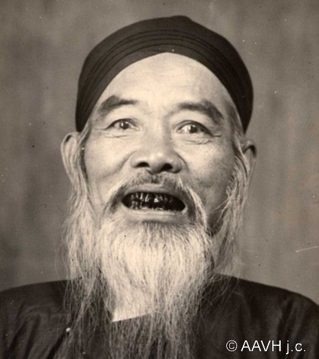
Không riêng phái nữ: Các cụ ông nho sĩ xưa cũng nhuộm răng đen nhánh. Men Included: Vietnamese scholars also wore jet-black teeth.
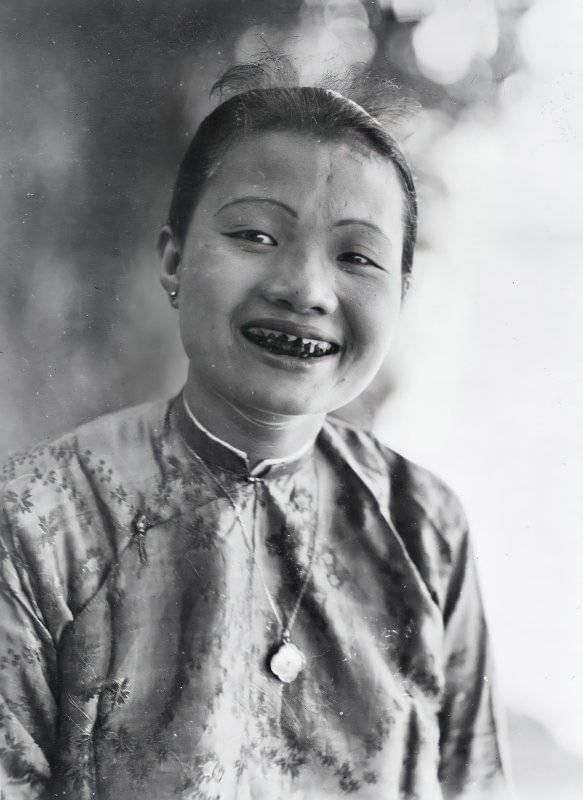
Visual chuẩn mực: Răng đen bóng như hạt na, hạt huyền. The Ideal Smile: Teeth glossy as custard-apple seeds.
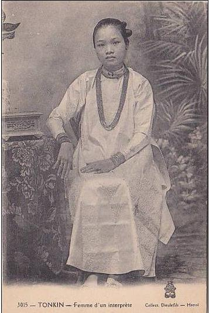
Postcard Đông Dương: Vẻ đài các của phụ nữ Bắc Bộ đầu thế kỷ XX. Indochina Postcard: Noble grace of an early 20th-century Northern lady.
Người xưa kể rằng: Giữ màu răng đen cũng là giữ bản sắc, giữ nước Elders used to tell: Keeping black teeth meant defending our identity & homeland
Người xưa kể rằng, ngoài chuyện làm duyên và bảo vệ men răng, màu răng đen nhánh còn được truyền tai nhau như một “dấu nhận diện” riêng để người Nam khẳng định bản sắc, quyết không bị đồng hóa với phương Bắc qua bao cuộc chiến giữ nước. Chẳng thế mà năm 1789, vua Quang Trung từng khích lệ ba quân bằng lời hịch đi vào sử sách:
Elders used to tell that beyond charm and enamel care, jet-black teeth served as a proud mark of cultural sovereignty—refusing assimilation by the North through centuries of defending the homeland. In 1789, Emperor Quang Trung famously rallied his troops:
Làm sao để có hàm răng
Đen Huyền?
How did they craft
Jet-Black Teeth?
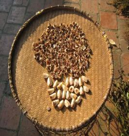
Vỏ cau khô & thảo mộc Dried areca & herbsMở men & Nhuộm đỏ Etching & Red Base
Chà răng bằng vỏ cau khô, ngậm chanh giấm cho mở men; đắp nhựa cánh kiến đỏ suốt 10 đêm.
Scrubbing with areca husk and lemon-vinegar, then binding sticklac resin for 10 nights.
Lên màu đen & Phủ bóng Black Dye & Polish
Phết lá phèn đen trộn khoáng sắt lấy sắc huyền; quết nhựa gáo dừa đốt tạo độ bóng gương.
Applying black alum leaves and iron sulfate; sealing with burnt coconut tar for mirror gloss.
30 Ngày “Nuốt Chửng” 30 Days No Chewing
Môi sưng vều, răng ê buốt. Kiêng nhai, kiêng đồ nóng, chỉ nuốt chửng cơm chan nước nguội cả tháng!
Swollen lips and aching teeth—swallowing cold rice with water without chewing for a month!
Lớp “Sơn Mài” Giữ Răng Natural Cavity Shield
Chất tannin và ion sắt kết tinh bọc kín men răng chống sâu, kết hợp nhai trầu cau sát trùng.
Tannins and iron ions sealed enamel against decay, maintained by antiseptic betel chewing.
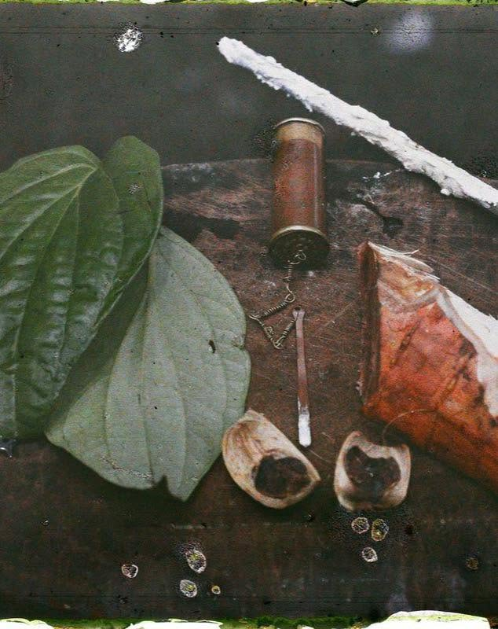
Cơi trầu & ống vôi cổ Vintage betel & lime kitNguồn gốc & Mục đích nhuộm răng ở các quốc gia lân cận Origins & Social Purpose in Neighboring Countries
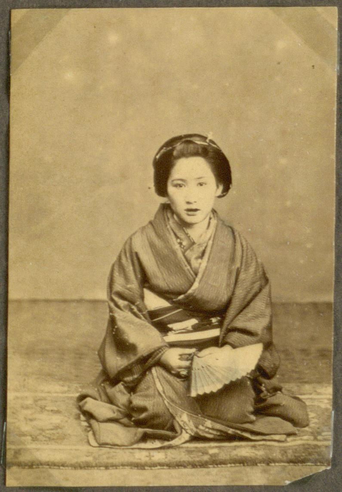
Từ Hoàng gia, Samurai đến Phụ nữ kết hôn From Imperial Nobles & Samurai to Married Women
Khởi nguồn từ thời Heian (thế kỷ VIII–XII), ban đầu chỉ giới quý tộc hoàng gia và võ sĩ Samurai mới được nhuộm răng đen (bằng nước sắt Kanemizu & bột Fushi) để thể hiện quyền quý và lòng trung thành “không đổi màu”. Sang thời Edo, tục này trở thành dấu hiệu của phụ nữ đã lập gia đình và các Geisha.
Originating in the Heian period (8th–12th c.), tooth blackening was initially exclusive to Imperial aristocrats and Samurai (using Kanemizu iron & Fushi gallnut) to signify nobility and unwavering loyalty. By the Edo era, it marked married women and Geisha.
Dấu mốc thành đinh & Thuốc nam giữ răng Adulthood Milestone & Herbal Protection
Với các tộc người Bách Việt cổ, người Lự, người Thái ở Vân Nam và Tây Bắc, thiếu nữ 13–15 tuổi phải nhuộm răng đen bằng nhựa cánh kiến rừng hoặc mồ hóng nhựa cành ổi, tre tươi đốt thì mới được coi là trưởng thành, đủ tư cách tìm bạn trăm năm và tránh sâu răng nơi rừng ẩm.
Among ancient Baiyue groups, the Lu, and Tai peoples, girls aged 13–15 blackened their teeth with forest sticklac or burnt bamboo/guava tar as a mandatory rite of passage before courtship and as herbal protection against humid jungle decay.
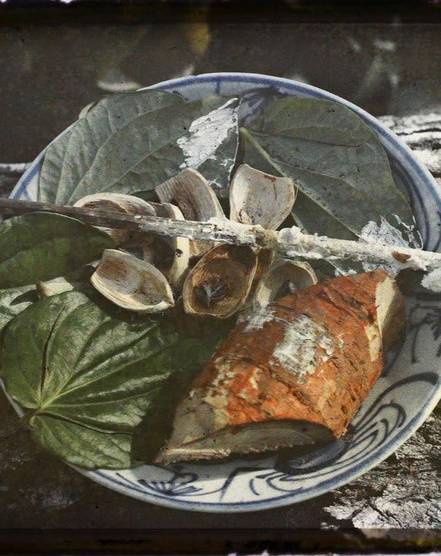
Khẳng định phẩm giá con người trước tự nhiên Separating Humans from Wild Beasts
Cư dân hải đảo xưa quan niệm chỉ có thú hoang hay ma quỷ mới để lộ hàm răng trắng nhởn. Vì thế, việc mài và nhuộm đen răng bằng nhựa gáo dừa đốt, khoáng sắt và trầu cau là nghi thức thiêng liêng khẳng định vẻ đẹp văn minh và vị thế xã hội trong bộ tộc.
Island communities traditionally believed only wild animals and spirits bared raw white teeth. Coating teeth with burnt coconut shell resin, iron clay, and betel was a sacred rite affirming human civilization and tribal status.
ARTWORK • RĂNG ĐEN MÔI ĐỎ ARTWORK • BLACK TEETH, CRIMSON LIPS
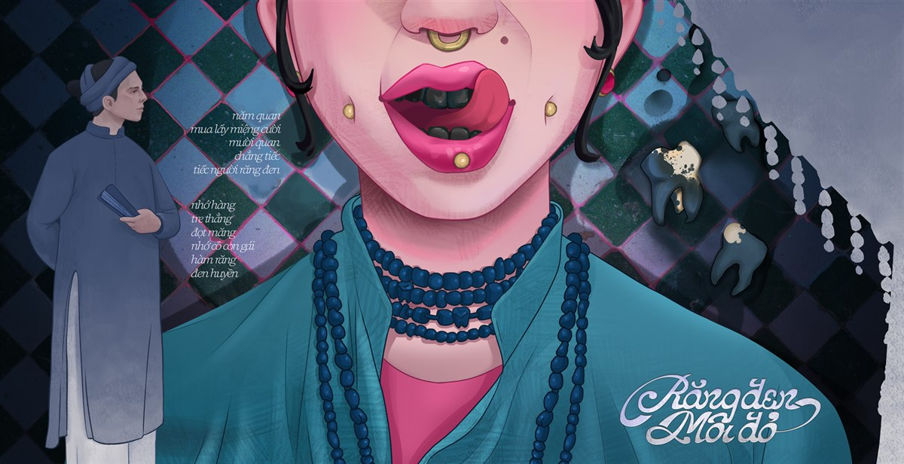
Key Visual — Cuộc gặp gỡ thị giác giữa nho sĩ xưa và cô gái hiện đại trên nền gạch bông cổ. Key Visual — A visual encounter between a traditional scholar and a modern girl against vintage tiles.
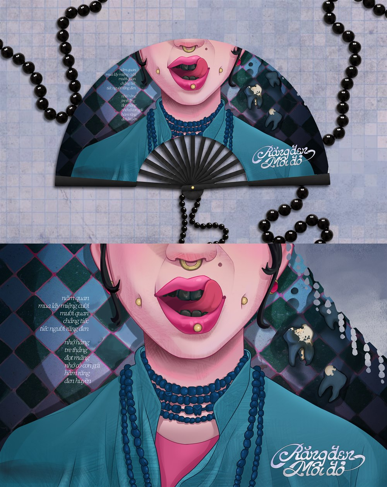
Ấn phẩm Quạt Xếp Cầm Tay (Handfan) phối dây chuỗi hạt đen huyền. Folding Handfan edition paired with glossy jet-black bead tassels.
Lấy cảm hứng từ chuẩn mực thẩm mỹ “răng đen hạt huyền” đã dần ngủ quên, bộ Artwork tái hiện nét duyên truyền thống bằng ngôn ngữ minh họa đương đại:
Inspired by the bygone “jet-black teeth” beauty standard, the Artwork collection reimagines folk grace through contemporary illustration:
THÔNG TIN TÁC PHẨM SPECIFICATIONS
- Tác giả / Artist Artist / Studio
- @nene.neth
- Ngôn ngữ thị giác Visual Style
- Giao thoa Dân gian Việt Nam & Pop-Art Đương đại Vietnamese Folk Aesthetics & Contemporary Pop-Art
- Hạng mục Deliverables
- Key Visual, Handfan, Sticker Set
- Chất liệu chủ đạo Key Motifs
- Gạch bông xanh, chuỗi hạt răng đen, ca dao cổ Vintage teal tiles, tooth-bead necklaces, folk verse
Khi Đen và Trắng đổi ngôi When Black and White trade places
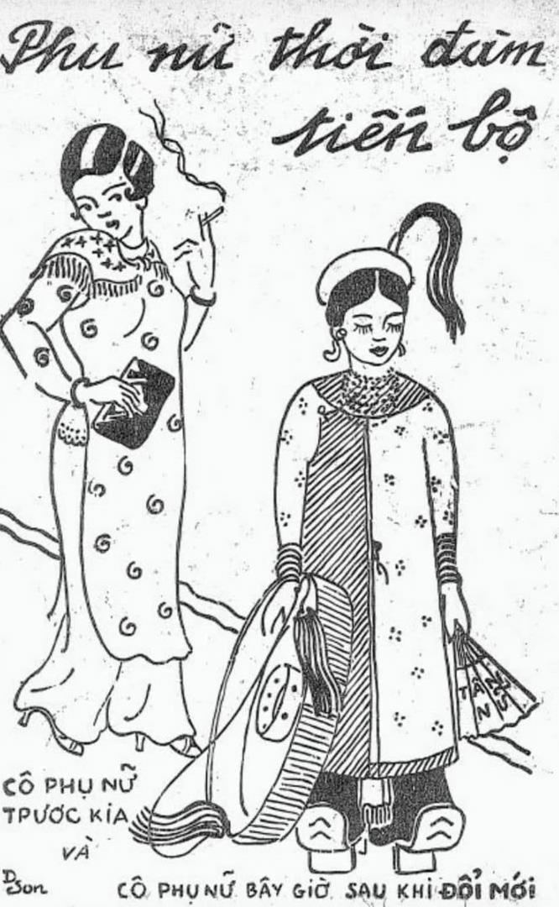
Bước sang thập niên 1930 — thời kỳ của báo Phong Hóa, Ngày Nay và phong trào Âu hóa — hình mẫu “tố nữ tân thời” với tà áo dài Lemur, mái tóc uốn và kem phấn phương Tây bắt đầu làm lung lay chuẩn mực nghìn năm.
Entering the 1930s—the era of Phong Hoa magazine and Western modernization—the image of the “modern girl” in tailored Lemur tunics, permed hair, and Western cosmetics began shaking a thousand-year-old standard.
Từ thành thị đến thôn quê, các cô gái trẻ dần ngại ngùng với hàm răng đen của bà, của mẹ và rủ nhau đi “cạo răng trắng”. Một cuộc đổi ngôi ngoạn mục diễn ra: thứ từng bị chê là “trắng nhởn” bỗng hóa chuẩn mực mới, còn sắc đen huyền kiêu hãnh lùi dần vào miền ký ức.
Young urban women began scraping off black lacquer in favor of white teeth. A dramatic reversal unfolded: what was once mocked as stark white became the new ideal, while proud jet-black enamel quietly receded into memory.
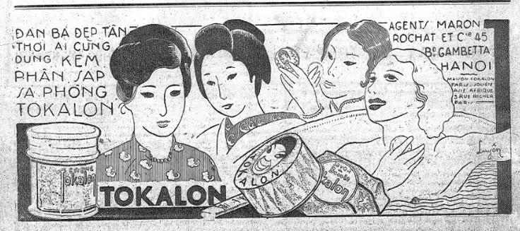
Răng Đen Hạt Huyền Jet-Black Teeth
Mười quan chẳng tiếc — biểu tượng của nét duyên đằm thắm Việt xưa.
The timeless emblem of traditional Vietnamese grace.
Tẩy Trắng Tinh Tươm Bleached & Polished
Khi vết ố bị xem là khuyết điểm và kem đánh răng trắng sáng lên ngôi.
When stains became flaws and whitening toothpaste took over.
Chuẩn Răng Trắng Sứ Porcelain Smile
Hàm răng trắng đều tăm tắp trở thành “vũ khí” tự tin của thời đại mới.
Uniformly radiant white teeth as the modern badge of confidence.
Mắc Cài & Đính Đá Braces & Tooth Gems
Giới trẻ lại thích gắn đá, đeo grillz, mắc cài màu — vòng lặp “độ răng” đang quay lại?
With tooth gems, grillz, and colorful braces—is tooth adornment coming full circle?
Bây giờ, những người bà với hàm răng đen bóng ấy đã không còn nhiều, những nếp văn hóa cũ dần lùi vào ký ức. Thế hệ sau không còn nhuộm răng, cũng ít ai còn giữ thói quen ăn trầu. Bởi thời thế thay đổi, quan niệm về cái đẹp cũng khác đi.
Đã từng có một thời răng đen mới là đẹp, còn ngày nay chúng ta chỉ có thể tự tin khi hàm răng đã trắng sáng… Trắng và đen đã thay thế vị trí của nhau, và chuẩn mực cái đẹp sẽ luôn xoay vòng. Bạn có suy nghĩ gì về điều này?
Today, grandmothers with those gleaming black teeth are few and far between, as old cultural traditions gently recede into memory. Younger generations no longer dye their teeth, and few keep the habit of chewing betel. Because as times change, perceptions of beauty change as well.
There was once a time when only blackened teeth were considered beautiful, whereas today we can only feel confident when our teeth are gleaming white… Black and white have traded places, and beauty standards will forever come full circle. What are your thoughts on this?
Gửi lời nhắn cho Nè Ne 💌 Share Your Thoughts 💌
Bạn thấy thế nào về dự án này của Nè Ne, cho mình thêm cảm nghĩ và feedback nha: What do you think about this project by Nè Ne? Share your thoughts and feedback with us:
Đồng hành cùng Nè Ne ✨ Stay Tuned with Nè Ne ✨
Nếu bạn thấy hứng thú với dự án nhỏ này của Nè Ne và cũng mong chờ xem những dự án sắp tới: follow Nè Ne nha! If you enjoyed this little project by Nè Ne and look forward to upcoming artworks: follow Nè Ne!
Follow @nene.neth